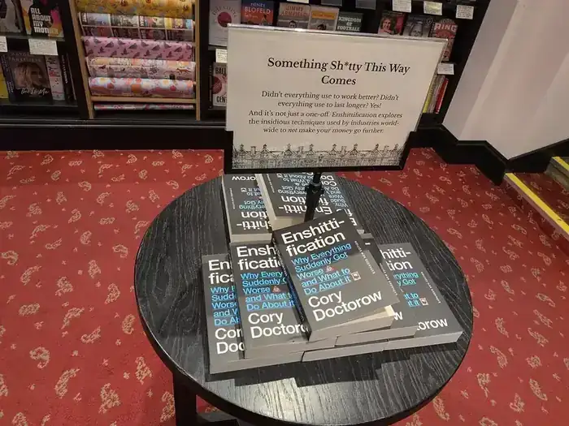

The claim
Cory Doctorow's term, coined in 2022 and elaborated in a 2023 essay, describes a predictable lifecycle for platforms that sit between users and suppliers:
Maps, diagrams and images


- Good to users. The platform subsidises itself, loses money, and is delightful — it has to be, to win the network.
- Good to business customers. Once users are locked in, it starts charging the suppliers — the sellers, the drivers, the publishers, the app developers — and delivers them the audience it captured.
- Abuse both. Once both sides are locked in, it charges suppliers for reach and charges users in attention, data and degraded service, extracting the difference for shareholders.
- Death, or irrelevance. Users leave, or regulators intervene, and the cycle ends.
The mechanism is not greed in the abstract; it is switching costs plus captured audiences. You can only mistreat someone who cannot easily leave, which is why the pattern is strongest in markets with network effects and weakest where switching is cheap.
Why it is documented rather than speculative
The fable is new; the behaviour has court records. Amazon's own advertising business grew while its marketplace search results filled with sponsored placements — the seller pays to reach customers who were already there. The U.S. FTC sued Amazon in 2023 over exactly this dynamic. Apple's App Store takes a commission from developers who have no alternative distribution channel, a fact at the centre of multiple antitrust cases. Search results pages have filled with advertising and answer-boxes that keep the click on the platform.
None of those facts is in dispute. What is in dispute is whether they add up to a law of platform economics or a description of a particular regulatory moment.
It is not a theory with predictions. As stated it can accommodate almost any outcome: a platform that stays good is "not yet enshittified"; one that dies is the fourth stage. That flexibility is why economists have been slow to adopt the word.
The word is a moral judgement, and that is the point. Doctorow is an advocate, and the essay is an argument for regulation (interoperability, end-to-end neutrality, privacy law). That does not make it wrong — it makes it a brief, not a measurement.
Some "degradation" is competition working. Rising ad load can reflect a market maturing, not a conspiracy. The two-sided-market literature predicts much of this without needing a villain.
Counter-examples exist. Some platforms have improved and kept users: message apps that stayed free, Wikipedia, Linux. The pattern is common, not universal, and the exceptions are informative.
The testable core
Strip the rhetoric and there are testable claims: (1) quality declines as market concentration rises; (2) this shows up first in features that are hard for users to verify — search ranking, feed ordering, ad load; (3) regulation that lowers switching costs reverses it. European interoperability rules and the DMA are, in effect, the experiment.
The evidence so far partly supports (1) and (2). The third is being run in public, and the results will be more informative than another decade of argument.
Why it belongs in this archive
Because it is the rare case where a phrase coined on a blog became the standard description used by regulators, and where the accusation is largely true and the causal story is contested. That is the same position as the proven plots and the opposite of the dead internet theory, which names a real worry and then overstates the mechanism.
Sources for this page
- Doctorow, “The enshittification of TikTok” and the follow-up essay (2023)pluralistic.net
- U.S. FTC, suit against Amazon over marketplace competition (2023)www.ftc.gov
- Wikipedia, “Enshittification” — origin, stages, reception and criticismen.wikipedia.org
- European Commission, the Digital Markets Actdigital-markets-act.ec.europa.eu
Open resources on this topic
- BookCory Doctorow's Enshittification As AI Destiny — Dr. Heinrich Von Liechtenstein · 2026 (Internet Archive, free to read)
- BookAnti-Enshittification: AI-Powered Browser Defenses Against Dark Patterns and Manipulative UI ? Browser Engine, — Alpasan, Lois-Kleinner (Internet Archive, free to read)
- BookEnshittification collage slideshow (Internet Archive, free to read)
- PapersOpen-access articles: DOAJ · PubMed Central · Internet Archive Scholar
- BooksPublic-domain and borrowable copies: Open Library · Project Gutenberg · Google Books
Cite this page
Momin, S. (2026). Enshittification. The Larger World Archive. https://drsamonline.github.io/LARGE_GLOBE/enshittification.htmlMomin, Sohil. “Enshittification.” The Larger World Archive, 2026, https://drsamonline.github.io/LARGE_GLOBE/enshittification.html.Momin, Sohil. “Enshittification.” The Larger World Archive, 2026. https://drsamonline.github.io/LARGE_GLOBE/enshittification.html.@misc{enshittification2026enshittification,
author = {Momin, Sohil},
title = {Enshittification},
year = {2026},
howpublished = {The Larger World Archive},
url = {https://drsamonline.github.io/LARGE_GLOBE/enshittification.html},
note = {Last reviewed 20 November 2026}
}Last reviewed 20 November 2026 · Corrections policy · this page is not peer reviewed